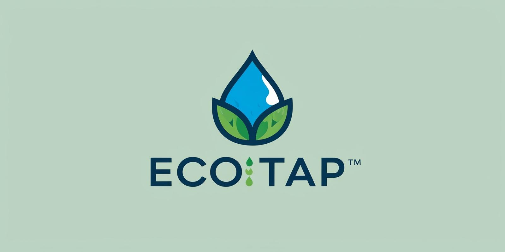

¿Que es?
Un grifo inteligente que se instala fácilmente en fregaderos y lavabos. Controla el flujo
de agua con sensores y mide el consumo en tiempo real.
Lo novedoso:
- convierte el ahorro de agua en un juego. A través de una app, los usuarios pueden:
Ver su consumo diario/mensual
- Competir con vecinos o amigos por quién ahorra más agua
- Ganar insignias o recompensas (descuentos, donaciones a ONGs ambientales)
- Recibir consejos personalizados para reducir el consumo

Características principales:
- Sensor de movimiento con control de flujo automático
- App con conexión Bluetooth o Wi-Fi
- Pantalla LED opcional que muestra consumo en tiempo real
- Fabricado con materiales reciclables
Valor diferencial:
Combina sostenibilidad, tecnología y motivación conductual (gamificación) en un
producto del día a día.
Está alineado con la creciente conciencia ecológica y puede
tener un gran atractivo para hogares, escuelas, hoteles y empresas.
¿Cómo puede impactar en la vida diaria del usuario?
- Ahorro de agua y dinero: Al reducir el consumo innecesario de agua, el usuario
no solo cuida el medio ambiente, sino que también reduce sus facturas de agua.
- Conciencia ecológica: La gamificación, el monitoreo y las alertas ayudan a que
los usuarios sean más conscientes de su consumo y más propensos a cambiar
sus hábitos hacia un estilo de vida más sostenible.
- Diversión y motivación: La integración de recompensas y la competencia entre
amigos o vecinos hacen que el ahorro de agua sea algo entretenido y positivo.
Entonces, el EcoTap no solo es un grifo, sino una herramienta educativa y motivacional
para la sostenibilidad, que convierte una acción diaria (como el lavado de manos o
platos) en una experiencia divertida y responsable.